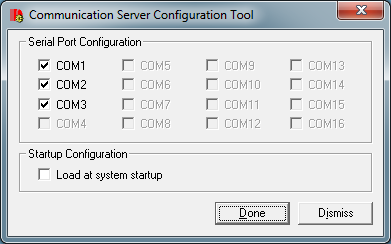

|
| SAMBA19xUI User Interface Manual |
| SAMBA19xUI |
| AUTHOR(S): | MSHAT |
| REVISION: | 08 |
| DATE OF PRINT: | December 12, 2017 |
DOCUMENT CHANGE & HISTORY RECORD
| Name | Last Update | Status | Version | ECR/PR/IP | Comment |
| MSHAT | 28.01.2016 | Draft | 00 | First version | |
| MSHAT | 14.09.2016 | Draft | 01 | Modification related to SAMBA19xUI 1.9.0.5, which is a part of the SAMBA1.9.x installation package. | |
| MSHAT | 02.11.2016 | Released | 02 | Modification related to SAMBA19xUI 1.9.0.6. | |
| MSHAT | 16.11.2016 | Released | 03 | Modification related to SAMBA19xUI 1.9.0.7. Added Appendix. |
|
| MSHAT | 08.12.2016 | Released | 04 | Modification related to SAMBA19xUI 1.9.0.8. | |
| MSHAT | 10.04.2017 | Released | 05 | Modification related to SAMBA19xUI 1.9.0.9. | |
| MSHAT | 25.04.2017 | Released | 06 | Modification related to SAMBA19xUI 1.9.0.10. | |
| MSHAT | 09.05.2017 | Released | 07 | Modification related to SAMBA19xUI 1.9.0.11. | |
| MSHAT | 09.05.2017 | Released | 08 | Modification related to SAMBA19xUI RC02 V1.9.0.13. |
Notice!
| Although this document has been prepared with the utmost care, errors of any kind cannot be totally discounted. The contents of this document may be periodically revised, amended or changed otherwise by the originator without notice. You are invited to report any deficiencies / recommendations to IDE. |
Windows 7 ®, Windows 8 ® are registered trademarks of the Microsoft Corporation, USA.
© Copyright 2015, Integrated Dynamics Engineering GmbH
Introduction
Remark: SAMBA19xUI is compatible with firmware version 3.3.00 and higher.
Language
This manual is originally written in English language.
Overview
This document describes how to use the “User Interface” for the opticon controller. The “User Interface” allows querying and changing nearly all configurable controller settings.
Intended Audience
The software and this document is intended for users of an IDE vibration isolation system.
Requirements
In order to run this software, the following requirements must be met:
Windows 7®, Windows 8®, or later version.
Personal computer with x86- or x64-based microprocessor 2.8 GHz or higher, 4GB RAM are recommended.
SVGA-resolution with a minimum of 1600x900 pixel and 16-Bits high colors.
Mouse or compatible pointing device
Microsoft .Net Frame work 4.5.2 or higher.
Contact
Integrated Dynamics Engineering GmbH
Hermannstrasse 9-13
65479 Raunheim, GERMANY
Phone: +49 (0)6142 9400-0
INSTALLATION
Copy the installation package from the CD to your PC. Read the SAMBA19x installation Guide document.
Getting Started
Your PC can communicate with the opticon controller with a USB connection or serial (RS232) connection. Use an A/B USB cable or a null modem cable.
Make sure that the FTDI USB-To-Serial converter driver is installed. This is needed to connect to controller via USB connector.
Start the SAMBA19xUI User Interface program with a right-click on the SAMBA19xUI shortcut and select Run as Admin.
Note: The SAMBA19xUI has to run with administrative privileges. Otherwise the SAMBA19xUI doesn’t start.
Start-Up
The SAMBA19xUI uses the communication server like the other SAMBA applications. This means only selected COM Ports in the communication server could be used to talk to controller.
Note1: Ensure that the used com port number is configured “selected” by the “Communication Server Configuration Tool”. Otherwise the connection will not be established.

Figure 3.1.1 Communication Server Configuration Tool
Note2: If you connect via the USB port, the port will be shown as an additional com port (Virtual Com Port).
Note3: The standard baud rate for the Opticon controller is 57600.
After the start of the SAMBA19xUI choose the com port and confirm with the “Connect” button to establish the connection.
Note4: The used com ports by the CommServer could be configured by SAMBA19xUI version 1.9.0.8 and higher assuming the SAMBA19xUI is running with administrator privileges. (By some PCs with 64Bits operation system this doesn’t work properly).
Note5: SAMBA19xUI version 1.9.0.9 accept command line arguments to adjust the com port and baud rate. Call “SAMBA19xUI.exe 1 57600” to launch SAMBA19xUI and to connect automatically to a controller on com port 1 using 57600 baudrate.
The command line arguments structure regarding the com port number and baud rate has been modified up SAMBA19xUI RC02 V1.0.0.1. Com port could be set by “#CP” prefix and baud rate could be set by “#BR” prefix (example: call “SAMBA19xUI #CP 1 #BR 57600”). Furthermore the command line argument accepts SAMBA19xUI configuration files and SAMBA19xUI label files file.
Figure 3.1.2: Connection with a controller.
Description
Overview
The SAMBA19xUI like the old SAMBA_UI has a tabs structure the so called menus. Some tabs “main tabs” contains sub-tabs “sub-menus”. In this document the tabs are called pages. The appearance of some pages is dynamic. This means the containing control elements on the page is dependent on the firmware of the connected opticon.
Note: SAMBA19xUI configuration files (*.samba19x_config) could be opened by drag and drop.
Connect Page
The “Connect” page allows you to connect or disconnect to a controller.
Figure 4.1.1: Connect Page.
Use “Baud Rate” combo box to adjust the baud rate. The default baud rate for all opticon controller is 57600.
Use “Connect” button to establish the connection with the controller.
Use “Disconnect” button to disconnect the communication.
Use “Terminate Comm Server and Connect” button to close the Comm Server session, if one is already started and to connect with a new session. This option is recommended after a communication trouble.
Use “Update Comm Ports list” button to refresh lists of the available com ports.
Figure 4.1.2: Connect Page after a successful connection with controller.
Context Menu
Click the right mouse button to display the SAMBA19xUI context menu.
Figure 4.2.1: Context Menu.
About
Click “About” menu item to display the about dialog. It contains info about the SAMBA19xUI version information and build date.
Figure 4.2.2: About Window
Refresh Timer
A couple of status parameters are continuously refreshed from the controller through a timer event.
Click “Refresh Timer” menu item to Start/Stop the timer.
UI Options
SAMBA19xUI contains control elements for new firmware features. New firmware version higher than 3.3.102 provides information about the new features. The info about the new features is included in parameter “System Configuration Info”. The SAMBA19xUI reads those info. Then it adjusts its control components regarding to the system configuration info.
Click “UI Options” menu item to show the “UI Setting” window.
Figure 4.2.3: UI Setting.
Figure 4.2.4: UI Setting.
The system configuration info could be modified manually. The modification applies only for the SAMBA19xUI but not for the connected firmware.
Disable “Load System Configuration from Controller” check box to change the user interface setting manually.
Enable “Auto Loop Switch” option when the firmware supports the automatic loop switching.
Enable “Non Linear Position Control” option when the firmware supports the nonlinear position control feature.
Enable “Cascaded Position Control” option when the firmware supports the cascaded position control feature.
Enable “Event Logging” option when the firmware supports the event logging feature.
Enable “System Safety Routine” option when the firmware supports the system safety feature.
Enable “EtherCat Support” option when the firmware supports the EtherCat communication.
Enable “Pneumatic Ramp Support” option when the firmware supports the Pneumatic Ramp Support.
Enable “Temperature Sensor Support” option when the firmware supports the temperature sensor AD-Mapping.
Enable “Safety and Earth Quake Monitor Support” option when the firmware supports this feature.
Enable “Extended ADC-Channels Support” option when the firmware supports all existing AD-Channels signals.
Enable “Position and Pneumatic Individual Loop Status Support” option if the firmware supports the position and pneumatic individual loop status.
Enable “Reference Metrology System Support” option if the firmware supports the reference metrology system.
Enable “Polynomial System Support” option if the firmware supports the polynomial system.
Enable “Offset Support for all Linear Motors” option if the firmware supports the offset for all 12 linear motors.
Remark: It is strongly recommended to enable the “Load System Configuration from Controller” option to load the system “Firmware” configuration from controller. This option should deactivated only for firmware version older than 3.3.103 which doesn’t contains system configuration info and they supports special features.
Controller Page
The controller page consists of a couple sub-pages “system setting page, AD/DA setting page and motor protection Page”.
System Settings Page
The “System Setting” page contains a global parameters setting.
Figure 4.3.1: System Setting with EtherCat Support.
Figure 4.3.2: System Setting without EtherCat Support.
Loops Configuration
Use “Loops Configuration” to configure the various control loops. Only configured control loops are processed in the firmware. The velocity loop is in the firmware fixed configured.
Note: Configuring additional loops loads the processor, therefore please take care about the system load “processor load” by changing the loop configuration. System loop shouldn’t exceeds 80%.
| Control Item | Description |
|---|---|
| Shows whether the velocity feedback loop is configured or not. | |
| Toggles the configuration status of the position loop on/off. It also shows the configuration status of the position loop. | |
| Toggles the configuration status of the pneumatic loop on/off. It also shows the configuration status of the pneumatic loop. | |
| Toggles the configuration status of the whole standard feed forward subsystem “FF-Subsystem” on/off. It also shows the configuration status of the complete FF-Subsystem. | |
| Toggles the configuration status of the stage part of FF-Subsystem “SFF” on/off. This contains the first 4 feed forward control channels. It also shows the configuration status of the SFF-Subsystem. | |
| Toggles the configuration status of the floor part of FF-Subsystem “FFF” on/off. This contains the last 3 feed forward control channels. It also shows the configuration status of the FFF-Subsystem. | |
| Toggles the configuration status of the pneumatic FF-Subsystem “PFF”. It also shows the configuration status of the PFF-Subsystem. |
Table 4.3.1: Loop Configuration Control Items.
Performance Monitor Setting
Use “Performance Monitor Setting” to specifies the performance monitor signal and the configuration parameters. The actual performance status is shown here.
| Control Item | Description |
|---|---|
| Specifies the I/O-Signal “monitor signal” which should be monitored as performance indicator. | |
| Specifies the threshold for a good performance. | |
Specifies the minimal trigger time. The monitor signal has to exceed the threshold value at least for this time to toggles the performance status to not okay. |
|
| Specifies the hold time duration for the performance status “Not Okay”. | |
| Shows the actual performance status. | |
| Shows the counter of the trigger time and the countdown of the hold time. |
Table 4.3.2: Performance Monitor Setting Control Item.
Switch Criterion Setting
Use “Switch Criterion Setting” group box to configure the parameters for the automatic loop switching. If the criterion is fulfilled and the “Loop Switch Setting” “Auto” is active the velocity loop will be deactivated and the position loop activated for a specific time “Hold Time”.
The “Switch criterion Setting” group box is optional (not always present) and firmware dependent. It is present only for firmware which supports the “Auto Loop Switch” routine.
| Control Item | Description |
|---|---|
| Specifies the I/O-Signal “monitor signal” which should be monitored for the automatic loop switching. | |
| Specifies the threshold for the monitor signal. | |
Specifies the minimal trigger time. The monitor signal has to exceed the trigger level at least for this time to trigger the auto loop switching. |
|
| Specifies the hold time duration for the loop switching. | |
| Shows the counter of the trigger time and the countdown of the hold time. |
Table 4.3.3: Switch Criterion Setting Control Items.
Loop Switch Setting

Figure 4.3.3: System Setting Page with comments.
| Control Item | Description |
|---|---|
The above button specifies whether the velocity loop status is always running (doesn’t mean it is active). The below LED shows whether the velocity loop is active. |
|
The above button specifies whether the position loop status is always running (doesn’t mean it is active). The below LED shows whether the position loop is active. |
|
Toggles the automatic loop parameter on/off and it shows its status. If it is on then the velocity and the position always running status are off. |
|
| Automatic loop on. | |
When velocity loop and position loop always running (see the left above picture), it is not possible to switch off the position loop by its button. Clicking the position button leads to switch the position always running status but it doesn’t switch the position loop off (see left middle picture). Click auto button to activate the auto loop switch and also to switch the position loop off (see the left below picture). |
Table 4.3.4: Loop Switch Setting Control Items.
Stage FF-Signals
The stage FF-Signal group box contains some settings which belong the stage FF-Signal.
| Control Item | Description |
|---|---|
| Specifies whether the type of the stage FF-Signal is analogue or digital. This option is valid only for firmware version older than 3.2.29. | |
| This is an option for a special customer solution. It is valid only for firmware older than 3.2.x. |
Table 4.3.5: Stage FF-Signals Control Items.
EtherCat Setting
The “EtherCat Setting” group box is firmware dependent. It is present just for firmware with EtherCat support.
| Control Item | Description |
|---|---|
| This option leads to overwrite the stage FF-Signals through the FF-Signals, which are provided by the EtherCat master. | |
| When this option is on, then the motors values which are provided by the EtherCat master are added to the motor outputs. |
Table 4.3.6: EtherCat Setting Control Items.
Ramp Setting
Use the “Ramp Setting” to configure the behaviour of the linear motor at startup phase.
| Control Item | Description |
|---|---|
| Specifies the type of outputs ramp. | |
| Specifies the ramp time for the linear motors respectively for the velocity axes outputs. |
Table 4.3.7: Ramp Setting Control Items.
Sample Frequency/System Load
Here the controller sample frequency could be adjusted. Furthermore the processor load is displayed.
| Control Item | Description |
|---|---|
| Specifies the controller sample frequency value. | |
| Click this button to accept the modified sample frequency value. Take care about the system “processor” load before increasing the sample frequency. For a certain operation system load shouldn’t exceeds 80%. | |
| Shows the system load. |
Table 4.3.8: Sample Frequency/System Load Control Items.
AD/DA Mapping Page
The appearance of the AD/DA-Mapping page is firmware dependent.
Use the “AD/DA Mapping” page to change the AD- and DA-Mapping of the input signals and output signals.
Change “Used ADC Num” to change the number of the AD-Inputs which will be read by the firmware.
Note: The value of input signals with AD-Mapping-Number equals to 44 are set to zero.
Note: Reading additional AD-Inputs loads the processor “DSP” performance and could leads to crash the firmware. Therefore take care about the system load by increasing the used ADC-Number. For a certain operation system load shouldn’t exceeds 80%.
Note: See appendix for the right AD-Mapping for the temperature sensors.

Figure 4.3.4: AD/DA-Mapping Page with supporting off all physical inputs (AD-Converter-Channels).

Figure 4.3.5: AD/DA-Mapping Page.
Motor Protection Page
Motor Threshold Setting Group Box

Figure 4.3.6: Motor Protection Page.

Figure 4.3.7: Motor Protection Page with Offset Support for all Linear Motors.
 Click “Set Threshold” to send the changed threshold values to controller.
Click “Set Threshold” to send the changed threshold values to controller.
 Click “Set Offset” to send the changed threshold values to controller.
Click “Set Offset” to send the changed threshold values to controller.
Motor Overheating Setting
| Motor Overheating Setting | |
|---|---|
| Control Item | Description |
| Specifies the smooth factor of the running averaging which is used to calculate the temperature respectively motor overcurrent values. | |
| Time period before reactivate the motors after an overheating case. | |
| Activate this option to use the motor temperature sensors instead the motor overcurrent values “modelled temperature” | |
| Activate to disable all motors in case of overheating of one motors. |
Table 4.3.9: Motor Overheating Setting Control Items.
Status Page
The “Status” main menu contains two sub menus (“Status” Page and “Signals Display” page).
Status Page

Figure 4.4.1: Status page.

Figure 4.4.2: Status Page with position and pneumatic individual loop status.
Signals Display Page
Up to 16 signals values could be continue displayed in big font. The signals are adjustable (Controller IO-Signal “Inputs, outputs, loops axes value …etc”).
Note: The event logging monitor signals are used here as IO-Signals. Changing these IO-Signals here will change automatically the event logging monitor signals and vice versa.

Figure 4.4.3: Signals Display Page.
| Excitation Setting | |
|---|---|
| Control Item | Description |
| Specifies the IO-Signal which its value will be continue displayed. | |
| Saves the event logging configuration parameters, which contains the IO-Signals. | |
| Loads the event logging configuration parameters, which contains the IO-Signals. | |
Table 4.4.1: Signals Display Control Items
Velocity Page
The “Velocity” main menu contains two sub menus (“Tuning” Page and “Sensor/Motor Matrix” page).
Velocity Tuning Page

Figure 4.5.1: Velocity Tuning Page
Velocity Loop Filters
Click on any filter button” ” to open the “Filter Setting Dialog” and to change its setting.
” to open the “Filter Setting Dialog” and to change its setting.

Click “Update” button to accept the change for the clicked filter.
Click “Update for all Axes” button to accept the change for the clicked filter number for all axes.
Change the “Axis Limiter” value to specify the velocity axis output limit.
Excitation
Use “Excitation” group box to configure an excitation signal and its injection point “signal”.
| Excitation Setting | |
|---|---|
| Control Item | Description |
| Click “Accept Change” button to accept the modification of the excitation setting and to send it to the controller. | |
| Specifies the excitation signal type. | |
| Specifies the excitation filters. | |
| Specifies the injection node “signal” of the excitation signal. |
Table 4.5.1: Excitation Control Items.
| Excitation Type | Parameters |
|---|---|
| White Noise |
|
| Sine Wave |
|
| Duty Cycle |
|
| Chirp Sine “recursive” |
|
Table 4.5.2: Excitation Types and their Parameters.
Diagnostic Signals
| Diagnostic Signals | |
|---|---|
| Control Item | Description |
| Specifies the IO-Signal which applies to the Diag0 BNC-Box on the controller front panel. | |
| Specifies the IO-Signal which applies to the Diag1 BNC-Box on the controller front panel. |
Table 4.5.3: Diagnostic Signals Control Items.
Tuning Helping Hand
Use the “Tuning Helping Hand” to simplify the configuration of the excitation injection point and diagnostic signals by measuring the frequency response function of the velocity loop axes.
| Tuning Helping Hand | |
|---|---|
| Control Item | Description |
| Specifies after which stage the axis will be measured. | |
| Click a button to specify the axis which will be measured. |
Table 4.5.4: Tuning Helping Hand Control Items.
Sensor/Motor Matrix
Use the “Sensor/Motor Matrix” page to configure “build” the velocity logical axes by changing inputs “sensors” respectively outputs “actuators” multipliers (6 degree of freedom). 
Figure 4.5.2: Velocity Sensor/Motor Matrix Page with 7 sensors.

Figure 4.5.3: Velocity Sensor/Motor Matrix Page with 8 sensors.
Position page
The “Position” main menu contains four sub menus.
Its appearance is firmware dependent. The axes number, the filters number as well as the number of the proximity offsets are firmware dependent.
Tuning page
The position “Tuning” page has a dynamic appearance. Its appearance depends on the running firmware of the opticon controller.
It contains the position filter setting, proximity sensor offsets, excitation group box, and tuning helping hand group box.
There is a field, which displays the actual proximity sensor input values and the position error relative to the offsets values.
Furthermore it contains the cascaded position and nonlinear position control configuration parameters. The cascaded and nonlinear position control features are firmware dependent. They are not in standard features.

Figure 4.6.1: Position Tuning Page

Figure 4.6.2: Position Tuning Page (Firmware supports 10 position axes and 6 position filters and position individual loop status).

Figure 4.6.3: Position Tuning Page with Nonlinear Position Control Support.

Figure 4.6.4: Position Tuning Page with Cascaded Position Control Support
Proximity Offsets
The proximity offsets values are subtracted from the proximity inputs values to build the proximity without offset inputs.
| Proximity Offsets | |
|---|---|
| Control Item | Description |
| Specifies the offset value for the vertical proximity of isolator 1. | |
| Specifies the offset value for the vertical proximity of isolator 2. | |
| Specifies the offset value for the vertical proximity of isolator 3. | |
| Specifies the offset value for the vertical proximity of isolator 4. | |
| Specifies the offset value for the horizontal proximity of isolator 1. | |
| Specifies the offset value for the horizontal proximity of isolator 2. | |
| Specifies the offset value for the horizontal proximity of isolator 3. | |
| Specifies the offset value for the horizontal proximity of isolator 4. |
Table 4.6.1: Proximity Offsets Control Items.
Excitation/Diagnostic
See sections 4.5.1.2 and 4.5.1.3.
Cascaded Position Setting
The cascaded position control is firmware dependent. It is supported only in special firmware versions.
The cascaded position control is used to get more position stability and accuracy. The vertical position is controlled by a cascaded control loop. The cascaded control loop consists of two control loops one is the position loop and the other is the pneumatic loop. Only the first 3 position axes are used. The cascaded control
| Cascaded Position Setting | |
|---|---|
| Control Item | Description |
| Specifies the hysteresis value for switching between cascaded and normal position control. | |
| Specifies the pre-filter between the position loop and pneumatic loop. |
Table 4.6.2: Cascaded Position Setting Control Items.
Nonlinear Position Setting
The nonlinear position is firmware dependent. It is supported only in special firmware versions.
It is applies for the first three position loop axes. The nonlinear position supports the pneumatic loop to stabilize the payload position by low frequency systems with nonlinear floatation behaviour.
| Nonlinear Position Setting | |
|---|---|
| Control Item | Description |
Specifies the operation type of the nonlinear position control. AtOutput: the position axes output are used to switch nonlinear on/off. AtOutput: the position axes input are used to switch nonlinear on/off. None: nonlinear position control off. |
|
| Activates resetting the position filters by toggling the nonlinear position control. | |
| Specifies the position window where the nonlinear position control is switched off. | |
| Specifies the position window where the nonlinear position control is switched on. |
Table 4.6.3: Nonlinear Position Control Items.
Tuning Helping Hand
Use the “Tuning Helping Hand” to simplify the configuration of the excitation injection point and diagnostic signals by measuring the frequency response function of the position loop axes.
| Tuning Helping Hand | |
|---|---|
| Control Item | Description |
| Specifies after which stage the axis will be measured. | |
| Click a button to specify the axis which will be measured. |
Table 4.6.4: Position Tuning Helping Hand Control Items.
Sensor Matrix Page

Figure 4.6.5: Sensor Matrix Page with 6 axes.

Figure 4.6.6: Sensor Matrix Page with 8 axes.
Use “Sensor Matrix” to specifies the inputs “devices” used by the position loop and their multipliers.
Motor Matrix Page

Figure 4.6.7: Motor Matrix Page with 6 axes.

Figure 4.6.8: Motor Matrix Page with 8 axes.
Use “Motor Matrix” to specifies the outputs “devices” used by the position loop and their multipliers.
Proxy Adjustment Page
The “Proxy Adjustment” page is displaying the proximity sensors values in a big font. It is intended to help adjusting the proximity sensors by manufacturing the systems.

Figure 4.6.9: Proximity Adjustment Page.
Pneumatic Page
The “Pneumatic” page contains just one submenu “Tuning Page”.
Its appearance depends on the running firmware. The number of valve outputs and the inputs number are firmware dependent. Furthermore the payload floatation setting depends on the firmware.
Pneumatic Tuning page

Figure 4.7.1: Pneumatic Tuning Page

Figure 4.7.2: Pneumatic Tuning Page with 8 inputs, 8 outputs and pneumatic ramp.

Figure 4.7.3: Pneumatic Tuning Page with 8 inputs, 8 outputs and pneumatic ramp.
Use “Sensor Matrix” and “Valve Matrix” to configure the pneumatic logical axes (the vertical 3 degrees of freedom “Ztrans, Xrot and Yrot).
Use “Pneumatic Filter” group box to change the axes filter settings by clicking on the filter button.
Use “Valve Offset” group box to specify resp. modify the Up- and Down-Offset values.
Change “Isolator Offsets” values to change the isolator floatation heights separately “isolator wise”.
| Control Item | Description |
|---|---|
| Click this button to drive the system up “floatation”. | |
| Click this button to drive the system down “deflating”. | |
| Click this button to accept the actual valve outputs as valve up-offsets. | |
| Click this button to accept the actual valve outputs as valve down-offsets. | |
| Toggles the pneumatic loop status On/Off. | |
| Toggles “Use the setpoint for all axes” option on/off. | |
| Toggles the valve dithering on/off. | |
| Toggles the move system up after startup “controller power cycle” On/Off. |
Table 4.7.1: Pneumatic Loop common Control Items.
Floatation Config
Use “Floatation Config” group box to configure the system floatation settings.
| Floatation Config | |
|---|---|
| Control Item | Description |
| Specifies the value which will be added to the initial proximity value to build the reference height “RefPoint” for down state. | |
| Specifies the set point “floatation height” for the payload. | |
| Specifies the position error tolerance value. | |
Table 4.7.2: Floatation Config Control Items.
Dithering Config
Use “Dithering Config” group box to configure the dither signal, which is added to the valve output. The dither signal is a sine wave signal with adjustable amplitude “Amount” and frequency.
| Dithering Config | |
|---|---|
| Control Item | Description |
| Specifies the amplitude value of the dither sine wave signal. | |
| Specifies the frequency value of the dither sine wave signal. | |
| Specifies the learning constant for the dither compensation adaptive filter “Alpha” could be specified. | |
Table 4.7.3: Dither Config Control Items.
Pneumatic Ramp Setting
Use “Pneumatic Ramp Setting” to specify the value of the pneumatic ramp parameter.
| Pneumatic Ramp Setting | |
|---|---|
| Control Item | Description |
| Specifies the running average smooth factor used to calculate the isolator’s height from of the proximity values. | |
| Specifies the gradient value for the reference point “RefPoint” by moving the system up. | |
| Specifies the gradient value for the reference point “RefPoint” by moving the system down. | |
| This is the time period to drive the valve output from Down-Offset to Up-Offset values. | |
Table 4.7.4: Pneumatic Ramp Setting Control Items.
Feed Forward Page
The “Feed Forward” page contains two subpages “FF Tuning, FF Gains”.
FF Tuning Page
The “FF Tuning” page contains nearly all configuration “tuning” parameters for the standard feed forward control channels.

Figure 4.8.1: FF Tuning Page.
| FF Global Setting | |
|---|---|
| Control Item | Description |
| Specifies the reference input signal of the FF-Channel. | |
| Specifies the adaptive “learning” constant of the “LMS-Algorithm” for the FF-Channel. | |
Toggles the FF-Channel-Output for the corresponding axis On/Off. . |
|
| Those are the reference filters. They are associated to the FF-Channel. They are used to pre-filter the input signals. Click on the filter button to change its setting. | |
| Those are the secondary filters. They are associated to the FF-Channel. They are used to pre-filter the input signal used by the LMS-Algorithm. Click on the filter button to change its setting. | |
| Those are the error filters. They are associated to the velocity axes. They are used to pre-filter the velocity axis. |
Table 4.8.1: FF Global Setting Control Items.
Stage Signal Multipliers
Use “Stage Signal Multipliers” group box to adjust the stage signals multipliers.
The multipliers manipulate the stage signals levels and also the tuning of the stage FF-Subsystem.
| Stage Signal Multipliers | |
|---|---|
| Control Item | Description |
| Specifies the multiplier value of the stage signal XPos. | |
| Specifies the multiplier value of the stage signal XAcc. | |
| Specifies the multiplier value of the stage signal YPos. | |
| Specifies the multiplier value of the stage signal YAcc. |
Table 4.8.2: Stage Signal Multipliers Control Items.
Stage Signal Offsets
Use “Stage Signal Offsets” group box to configure the offset values for stage position signals. The offsets values influence the stage signal level of the stage position signals and also the calculated stage FF-Signals “ZrXacc and ZrYacc”.
| Stage Signal Offsets | |
|---|---|
| Control Item | Description |
| Specifies the offset value of the stage signal XPos. | |
| Specifies the offset value of the stage signal YPos. |
Table 4.8.3: Stage Signal Offset Control Items.
Stage Signal Maximums
Use “Stage Signal Maximums” group box to configure the max values for the stage position signals. The maxima values the calculated stage FF-Signals “ZrXacc and ZrYacc”.
| Stage Signal Maximums | |
|---|---|
| Control Item | Description |
| Specifies the maximum value of the stage signal XPos. | |
| Specifies the maximum value of the stage signal YPos. |
Table 4.8.4: Stage Signal Maxima Control Items.
Threshold/Gains Number
Use “Threshold/Gains Number” group box to adjust the FF-Output threshold value and the used gains number and to toggles the FF-Subsystem, the adaptive status and using the raw axis input on/off.
| Threshold/Gains Number | |
|---|---|
| Control Item | Description |
| Specifies the maximum value for axis output part coming from the FF-Subsystem. | |
| Specifies the gains “coefficients” number of all FIR-Filters. | |
| Toggles the FF-Subsystem On/Off. | |
| Toggles the FIR-Coefficients adaption On/Off. | |
| This options specifies whether the velocity axis raw input or the filtered velocity axis signal after is used as error signal. |
Table 4.8.5: Threshold/Gains Num Control Items.
FF Gains Page
On the FF Gains the user is able to edit respectively modify the FIR-Filter gains “coefficients” manually.
Click the respective “Source” button to access the gains of its FF-Channel.

Table 4.8.6: FF Gains Page.
Pneumatic FF Page
The “Pneumatic FF” page contains two subpages “PFF Tuning, PFF Gains”.
PFF Tuning Page
The “PFF Tuning” page contains nearly all configuration “tuning” parameters for the pneumatic feed forward control channels.

Figure 4.9.1: PFF Tuning Page.
| PFF Global Setting | |
|---|---|
| Control Item | Description |
| Specifies the reference input signal of the pneumatic feed forward channel “PFF-Channel”. | |
| Specifies the adaptive “learning” constant of the “LMS-Algorithm” for the PFF-Channel. | |
| Toggles the PFF-Channel-Output for the corresponding pneumatic axis On/Off. | |
| Those are the reference filters. They are associated to the PFF-Channel. They are used to pre-filter the input signals. Click on the filter button to change its setting. | |
| Those are the secondary filters. They are associated to the PFF-Channel. They are used to pre-filter the input signal used by the LMS-Algorithm. Click on the filter button to change its setting. | |
| Those are the error filters. They are associated to pneumatic axes. They are used to pre-filter the pneumatic axis. |
Table 4.9.1: PFF Global Setting Control Items.
Threshold/Gains Number
| Threshold/Gains Number | |
|---|---|
| Control Item | Description |
| Specifies the maximum value for pneumatic axis output part coming from the PFF-Subsystem. | |
| Specifies the gains “coefficients” number of all FIR-Filters. | |
| Toggles the PFF-Subsystem On/Off. | |
| Toggles the FIR-Coefficients adaption On/Off. | |
Table 4.9.2: Threshold/Gains number Control Items.
PFF Gains Page
On the “PFF Gains” page the user is able to show respectively modify the FIR-Filter gains “coefficients” manually.
Click the respective “Source” button to access gains of its PFF-Channels.

Figure 4.9.2: PFF Gains Page.
Save/Load Setup
The “Save/Load Setup” page contains only one subpage “Save/Load”.

Figure 4.10.1: Save/Load Page
Save/Load/Clear NVRAM
| Control Item | Description |
|---|---|
| Click this button to save the actual parameters setting into the NVRAM. | |
| Click this button to load the parameters setting from the NVRAM. | |
| Click this button to clear the already saved parameters setting from NVRAM. | |
| Click this button to save the actual parameters setting to a setup “xml” file. | |
| Click this button to load the actual parameters setting from a setup “xml” file. This action doesn’t mean the loaded parameters are saved automatically into NVRAM. If this is desired then click the corresponding button . | |
| Toggles the NVRAM-Protection On/Off. By active NVRAM-Protection both button clear NVRAM and save into NVRAM are disabled. |
Table 4.10.1: Save/Load/Clear NVRAM Control Items.
Save/Load File
| Control Item | Description |
|---|---|
| Click this button to save the actual parameters setting to a setup “xml” file. | |
| Click this button to load the actual parameters setting from a setup “xml” file. This action doesn’t mean the loaded parameters are saved automatically into NVRAM. If this is desired then click the corresponding button . |
Table 4.10.2: Save/Load File.
NVRAM Areas Check Sum Information.
Note: The NVRAM check sum information are not automatically loaded from the controller by activating the save/Load-Page like by the old SAMBA_UI. Furthermore the check sum numbers are not build automatically by saving into NVRAM like the old SAMBA_UI.
| Control Item | Description |
|---|---|
| Shows the saved and the actual check sum numbers of the various NVRAM areas (monitor, firmware and configuration). | |
| Calculate the NVRAM areas check sum numbers and save them into NVRAM. | |
| Read the saved check sum numbers. |
Table 4.10.2: Save/Load File.
Set/Generate Label File
The label file contains labels for the user interface control items like the labels for the velocity loop inputs and outputs, input signals names, physical signals names (ADC-Signals) … etc. It influences the appearance of the user interface.
If there is no label file specified the SAMBA19x_UI uses the hard coded default labels.
| Control Item | Description |
|---|---|
| Shows the actual adjusted label file. | |
| Click this button to generate a default label file. | |
| Click this button to reset the labels to the default labels. (Modification requires restart ofSAMBA19x_UI). | |
| Click this button to set the labels to specific label file. (Modification requires restart ofSAMBA19x_UI). |
Table 4.10.3: Set/Generate Label File
Note: By changing the label file a SAMBA19xUI restart is required to enable the new labels.
Special Page
The special page is firmware dependent. It could be empty or it could has many pages which are containing a customized features.
Safety Page
The safety page contains the setting for the safety routine “performance routine” and earth quake detection routine. The safety routine could be called a performance monitoring routine, because it monitor the performance of the system regarding to its vibration and position.

Figure 4.11.1: Safety Page.
The safety routine uses the “root mean square” RMS-Values of the geophone and proximity sensors to detect a safety respectively performance mal function.
The earth quake routine uses the RMS-Values of the floor geophone sensors, which are placed on the ground, to detect an earth quake.
Safety and Earth Quake Status
| Control Item | Description |
|---|---|
| Shows the vibration status ok or not ok. | |
| Shows the vibration status ok or not ok. | |
| Shows if an earth quake has been detected or not. |
Table 4.11.1: Safety and Earth Quake Status.
Safety Setting
| Safety Setting | |
|---|---|
| Control Item | Description |
| Geophone Limit | Specifies the limit value for the geophone sensor RMS-Values, which shouldn’t be exceeded. Otherwise the vibration status becomes not okay. |
| Proximity Limit | Specifies the limit value for the proximity sensor RMS-Values, which shouldn’t be exceeded. Otherwise the position status becomes not okay. |
| RMS Time Window | Specifies the time period for the safety RMS-Values. |
Table 4.11.2: Safety Setting Control Items.
Earth Quake Setting
| Earth Quake Setting | |
|---|---|
| Control Item | Description |
| Geophone Limit | Specifies the limit value for the floor geophone sensor RMS-Values, which shouldn’t be exceeded. Otherwise the earth quake status becomes on. |
| RMS Time Window | Specifies the time period for the earth quake RMS-Values. |
Table 4.11.3: Earth Quake Setting Control Items.
System Safety Page
The system safety page contains the configuration data of the performance monitoring system. The vibration of velocity loop axes and the position of the position loop axes are monitored.
For each velocity and position loop axis there is an adjustable threshold value.
By the vibration monitoring the root mean square values of the velocity axes raw inputs about 1 seconds are built.
By the position monitoring the position axes values after last filter are used.
The vibration status is Ok when all RMS-Values of the velocity axes are below their threshold values. Otherwise it is not ok.
The position status is Ok when all values of the position axes are below their threshold values. Otherwise it is not ok.

Figure 4.11.2: System safety Page.
Not all Firmware supports getting the position loop axes actual values. By such a firmware the safety system looks like the below figure.

Figure 4.11.3: System safety without position axes values.
Polynomial Page
The polynomial page contains the configuration data of the polynomial system.

Figure 4.11.4: Polynomial Page
Polynomial Configuration
| Earth Quake Setting | |
|---|---|
| Control Item | Description |
| Toggles the polynomial processing status and overall active status on off. | |
| Saves the current polynomial configurations to a file. | |
| Loads an already saved polynomial configuration from file. | |
| Specifies the input signal of a specific polynomial. | |
| Specifies the output signal of a specific polynomial. | |
| Displays the current value of the input signal of a specific polynomial. | |
| Displays the current value of the output signal of a specific polynomial. | |
| Specifies the first coefficient value of a specific polynomial. | |
| Specifies the second coefficient value of a specific polynomial. | |
| Specifies the third coefficient value of a specific polynomial. | |
| Specifies the limiter value for a specific polynomial. | |
| Toggles a specific polynomial on/off. |
Table 4.11.4: Polynomial Setting Control Items.
Troubleshooting
Can’t run SAMBA19xUI
Ensure that the .Net framework 4.5.2 or higher is installed.
Run the SAMBA19xUI as administrator.
No Communication.
Check if the controller is powered on and the monitor LED is blinking.
Check if either a USB cable or a serial cable connects the controller with the PC.
Check if the used com port is selected by the “Communication Server ”
Use “Terminate Comm Server and Connect” button to establish the connection.
SAMBA19xUI hangs up during connecting to controller
By a communication failure with the controller and disconnecting, the communication server could hang up. When one try to reconnect to the controller using the “Connect” button the SAMBA19xUI hangs up.
Solution:
Terminate the SAMB19xUI using the task manager. Restart SAMBA19xUI and connect to the controller using “Terminate Comm Server and Connect”.
SAMBA19xUI doesn’t refresh the status parameters from controller
The SAMBA19xUI is connected to controller but it doesn’t refresh the status parameters like the loop status, individual loop status, pneumatic floating status parameters and position values.
Solution: Enable the refresh timer from the context menu. Sometimes you have to do it twice to enable.

SAMBA19xUI doesn’t start or it rises with and error message
If the SAMBA19xUI doesn’t start.
Solution:
Start SAMBA19xUI with administrator privileges.
Ensure the required .Net framework is installed.
If a failure occurs that cannot be solved, contact our technical support.
Phone: +49 (0) 6142 94000
Known Bugs and Problems
The following section lists the currently known bugs. These bugs will be resolved in future versions of the software.
| Description | Date | Version | Status | Solved |
|---|---|---|---|---|
| When the application runs for a rather long time “days”, it might happen that the communication with the controller stops. | 1.9.0.4 | Bug, open | No | |
SAMBA19xUI version 1.9.0.4 is not able to communicate with firmware version older 3.3.0. (It is still not recommended to use the SAMBA19xUI for firmware older 3.3.0). |
1.9.0.4 | Known issue | Solved in 1.9.0.5 | |
During loading all parameters from the controller by saving the actual parameters to xml file. The loading status window freezes after loading a couple of parameters. Work around: Wait until loading all parameters from controller is finished and go on with saving to the xml file. |
1.9.0.4 | Known Issue | No | |
Note: For more Information about software bugs and issues see the SAMBA19x “Software Revision History.pdf”.
Appendix
Temperature Sensors AD-Mapping
| Sensor | ADC Channel Number | |
|---|---|---|
| Standard Opticon | 19 Zoll front panel Opticon |
|
| OutX1Temp | 44 | 44 |
| OutY1Temp | 26 | 28 |
| OutZ1Temp | 27 | 29 |
| OutX2Temp | 28 | 30 |
| OutY2Temp | 44 | 44 |
| OutZ2Temp | 29 | 31 |
| OutX3Temp | 44 | 44 |
| OutY3Temp | 30 | 32 |
| OutZ3Temp | 31 | 33 |
| OutX4Temp | 32 | 34 |
| OutY4Temp | 44 | 44 |
| OutZ4Temp | 33 | 35 |
Table 7.1.1: AD-Mapping for the temperature sensors.